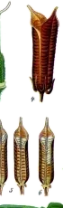
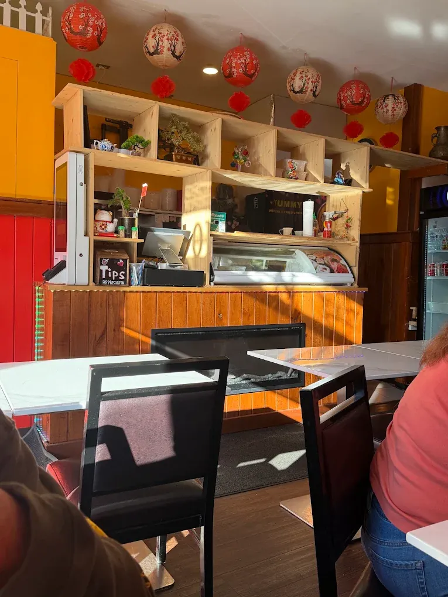
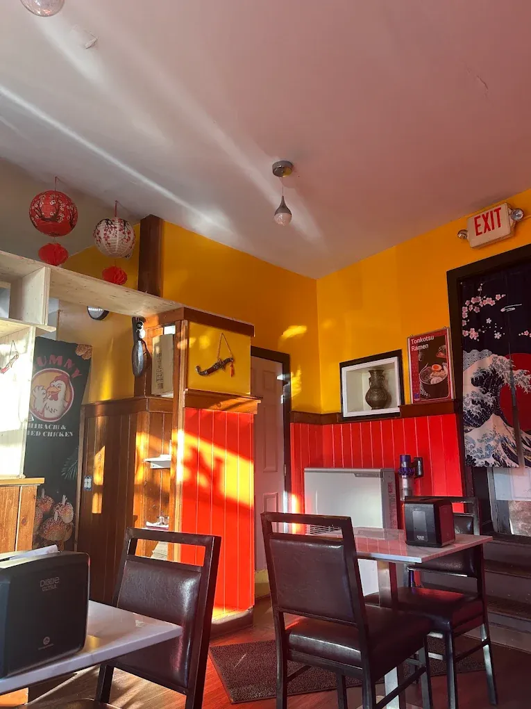
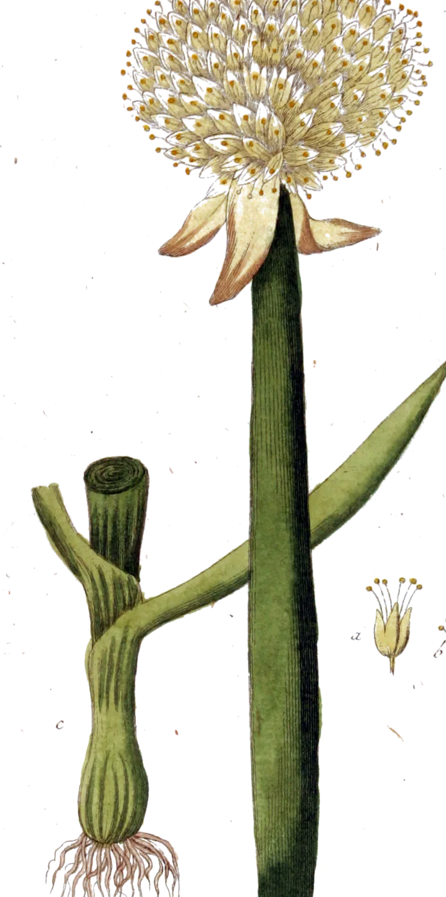

Our story
A noodle shop in the Old North End.
Ichiban opened at 156 North Winooski Avenue in October 2024. It's a small, family-run room serving rice noodle soup, ramen, hibachi, sushi and bubble tea late into the night.

You can taste the rice.
Jason Lin, owner, on the rice noodles, to Seven Days
Noodles we make ourselves
Our rice noodles come off a noodle machine at JBC Rice Noodles & Ramen, the family's shop in Colchester. Rice is soaked, ground and worked into a simple dough with a little wheat flour, then cut into noodles that stay tender and slippery in the bowl.
Every few weeks Jason and the family drive to New York or Boston for things Vermont doesn't stock, like bulk bags of dried wood ear mushrooms.
Our vegan broth is built on shiitake mushroom paste, so it's as savory as the rest.
What goes in the pot.
A few of the ingredients behind our broths and teas, drawn by 19th-century botanists.
-
Illicium verum
Star anise
八角Simmered into the mala broth for its deep, warm backbone.
-
 Cuminum cyminum
Cuminum cyminumCumin
孜然Cumin seeds go into the mala broth, too.
-
Sesamum indicum
Sesame
芝麻A splash of sesame oil rounds the mala broth out.
-
 Capsicum annuum
Capsicum annuumChili
辣椒Mala means hot and numbing. Chili brings the heat; Sichuan peppercorn brings the tingle.
-
 Oryza sativa
Oryza sativaRice
米Soaked, ground and turned into the rice noodles in our soups.
-
 Camellia sinensis
Camellia sinensisTea
茶Green tea is on the house when you dine in, and it's the base of our fruit teas.


A small room with a warm glow.
Mustard walls, red panels, paper lanterns and an electric fireplace for Vermont winters. The green tea is on the house and gets topped up while you eat.
Bringing a crowd? The dining room is small, but we've fit big groups before. Call (802) 540-1318 ahead so we can get ready.

One family, a few kitchens.
Jason Lin runs several restaurants around Chittenden County, with family members pitching in across all of them.
Seven Days Dining on a Dime: Rice Noodle Soup at Ichiban Asian Cuisine- Ichiban156 N Winooski Ave, Burlington
- Crispy BurgerNext door on N Winooski Ave
- Volcano Asian CuisineNorth Ave, Burlington
- JBC Rice Noodles & RamenColchester